Jaime Gutierrez and Rosario Rubio San Miguel
Universidad de Cantabria
Departamento de Matematicas, Estadistica y Computacion
Facultad de Ciencias, Avda. Los Castros s/n
Santander, Cantabrria, 39005
Spain
E-mail:jaime@matesco.unican.es
Abstract
The functional decompositon problem for univariate rational functions can be stated as follows (see Zippel (1991)): given an univariate rational function f(x) with coefficients in an arbitrary field ,
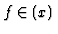
, determine whether there exist two rational functions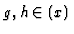
with degree larger than one, such that f(x)=g(h(x)), and, in the affirmative case, compute them. This problem has several applications, for instance, faithful re-parameterizing unfaithfully parameterized curves, providing a birationality test for subfields of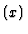
, computing intermediate fields in a simple purely transcendental field extension , etc.The method in Alonso, Gutierrez and Recio (1995) for decomposing a univariate rational function used the concept of near-separated polynomial: to each univariate rational function f(x)=fn(x)/fd(x), we associate the near-separated polynomial fn(x)fd(y)-fn(y)fd(x), The key of the algorithm is based on the following:
``Given two rational functions f(x), h(x), there exists a rational function g(x) such that
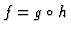
if and only if the near-separated polynomial associated to h divides the one associated to f".
The generalization of the decomposition problem to multivariate rational functions seems more involved. Similarly, we translate the above idea to multivariate functional decomposition. Now, to each list of multivariate rational functions
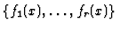
, we consider the near-separated ideal, Ideal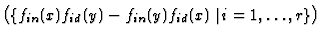
, of the polynomial ring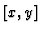
. Using this new concept and the Gröbner basis theory, we get the following theorem. In the polynomial ring we have:``If the near-separated ideal associated to
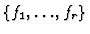
is a subset of the one associated to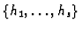
, then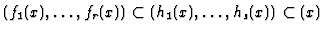
."The converse holds if we consider the near-separated ideals over
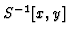
, the ring of fractions of with denominator S, the multiplicative closed set generated by all the polynomials in the variables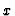
and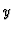
.
These results shed a new light on multivariate decomposition problem with application to compute intermediate fields in a purely transcendental field extension , which is a classical topic in Algebra (see Sweedler (1993)).